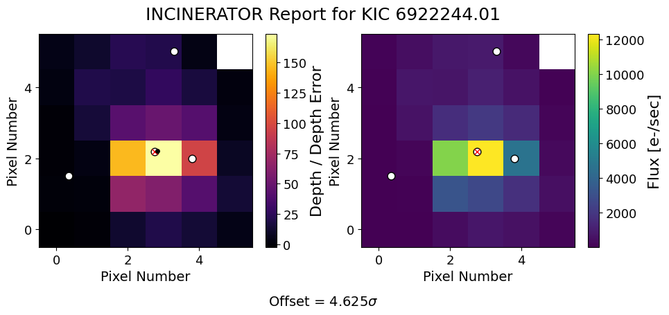

Running INCInERATOr on a Kepler Target¶
In this tutorial, we will learn how to use incinerator!
Step 1: Imports¶
First, make sure you are running the notebook in the correct environment (if you created one). Your Python kernel should be set to that environment.
Next, import incinerator and a few other useful packages.
import numpy as np
import pandas as pd
from astropy.io import fits
import incinerator.localize as loc
%matplotlib inline
Step 2: Initialize Localize Object¶
⚠️ NOTE:
incineratoronly deals with 1 quarter/sector of data at a time for the moment!
Get Your File¶
For this tutorial, we will use the Quarter 1 target pixel file (TPF) for Kepler-8 (KIC 6922244).
⚠️ Important:
incineratorrequires a local file when using Kepler or TESS TPFs because it relies on information in the.fitsheader.
You have two options:
1. Download manually
You can download the TPF from MAST Kepler Search.
2. Download using astroquery
You will need to add the following to your imports:
#you can find the file in the tutorials/` folder inside the `docs/` directory on GitHub.
file_path = "kplr006922244-2009166043257_lpd-targ.fits"
#opening the file
hdu = fits.open(file_path)
#extracting time, flux cube (in this case a tpf), and flux cube error
time = hdu[1].data['TIME']
flux = hdu[1].data['FLUX']
flux_err = hdu[1].data['FLUX_ERR']
Load Your TCEs¶
You will also need the information for the Threshold Crossing Events (TCEs).
You have two options:
1. Read from a CSV file
2. Create a pandas DataFrame manually
Note: Kepler-8 only has one TCE, but if your target has multiple TCEs, you can simply add each of them as a row in the same DataFrame.
Important: Make sure the columns are in the order expected by the function:
period→ 1st column- (any other column you may have)
t0→ 3rd columntdur→ 4th column (best rounded to two significant figures and in units of days)
Why? Because that’s how incinerator reads the TCEs internally, and the function relies on this ordering.
#creating tce dataframe
tces = pd.DataFrame({'star_id':6922244.01,
'period':3.5224,
'mes':np.nan,
't0':121.1194228,
'tdur':.12},index=[0])
Initialize the Localize Object¶
Now it’s time to create a Localize object!
You will need to provide the following inputs:
time→ the time array from your TPFflux→ the flux valuesflux_err→ the flux uncertaintiestces→ the TCEs DataFrame we just createdid→ the target’s KIC or TIC numbermission→"kepler"or"tess"depending on your TPFfile_path→ the path to the TPF file
Optional: If you are analyzing a background star in the TPF, you can also include bonus RA and DEC.
See the API for more details.
#initialize you Localize class object
loc_obj = loc.Localize(time, flux, flux_err, tces.to_numpy(), '6922244',
mission='kepler', file_name = file_path)
Step 3: Build the Design Matrix¶
Now we get to the easier part: running the necessary functions.
We need to build the design matrix, which incorporates all of the TCEs in your DataFrame.
Step 4: Generate Heatmaps and Fit PRF¶
Solve for the transits¶
First, we solve for the weights of each transit component in the design matrix.
If your target has multiple TCEs, they are solved simultaneously.
Fit PRF model¶
Next, we fit the PRF model to the resulting heat map to determine the likely location of the signal on the CCD.
If your target has multiple TCEs, you have two options:
1. Fit all TCEs at once
2. Fit one TCE at a time
Fit Result
| fitting method | leastsq |
| # function evals | 52 |
| # data points | 35 |
| # variables | 3 |
| chi-square | 1159.45681 |
| reduced chi-square | 36.2330254 |
| Akaike info crit. | 128.512560 |
| Bayesian info crit. | 133.178604 |
| name | value | standard error | relative error | initial value | min | max | vary |
|---|---|---|---|---|---|---|---|
| centery | 2.20868444 | 0.02165032 | (0.98%) | 2.1797535273219015 | 0.00000000 | 5.00000000 | True |
| centerx | 2.83093806 | 0.01774393 | (0.63%) | 2.7523684596755964 | 0.00000000 | 5.00000000 | True |
| amplitude | 368.028012 | 7.89527558 | (2.15%) | 94.51900318954748 | 0.00000000 | inf | True |
Step 5: Visualize Results¶
Plot the results¶

Interpreting results¶
The output figure contains two panels:
- Left panel: The "transit localization" heatmap
- The red X marks the the target star.
- The black dot shows the fitted location of the transit signal.
- Error bars represent the uncertainty in the fitted position.
- Right panel: The Target Pixel File (TPF)
The offset represents the separation (in units of σ) between the fitted position and the position of the target star.
If the fitted position is close to the pixel containing the target star, this suggests the transit signal is likely originating from that pixel. Larger offsets may indicate that the signal is coming from a nearby contaminating source instead.